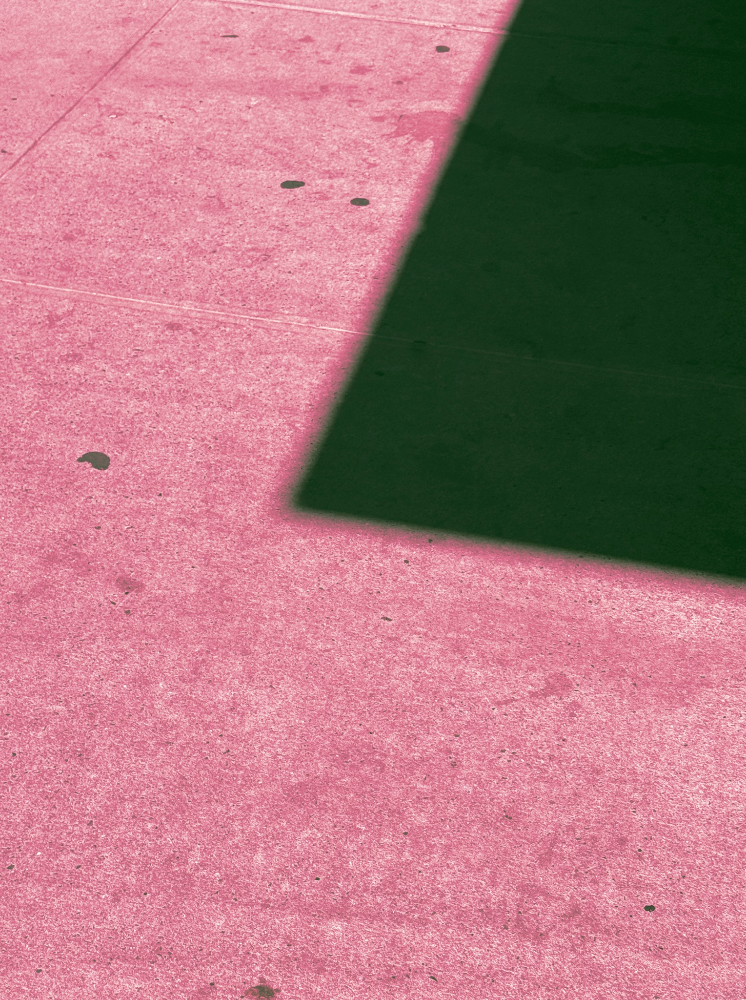
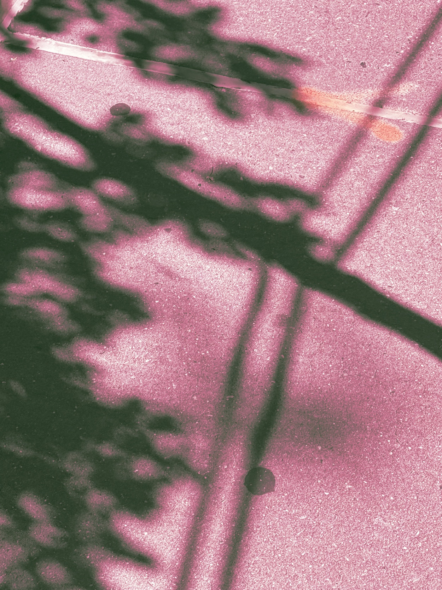
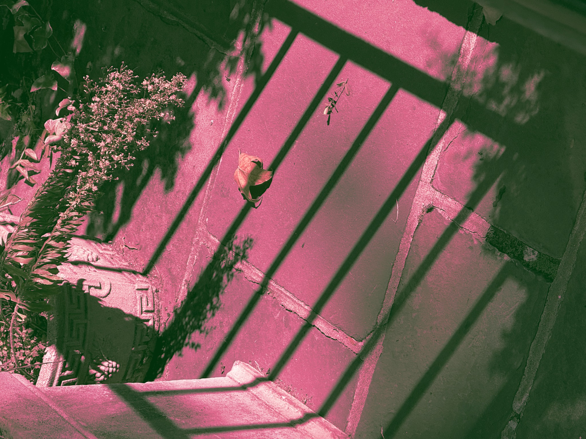
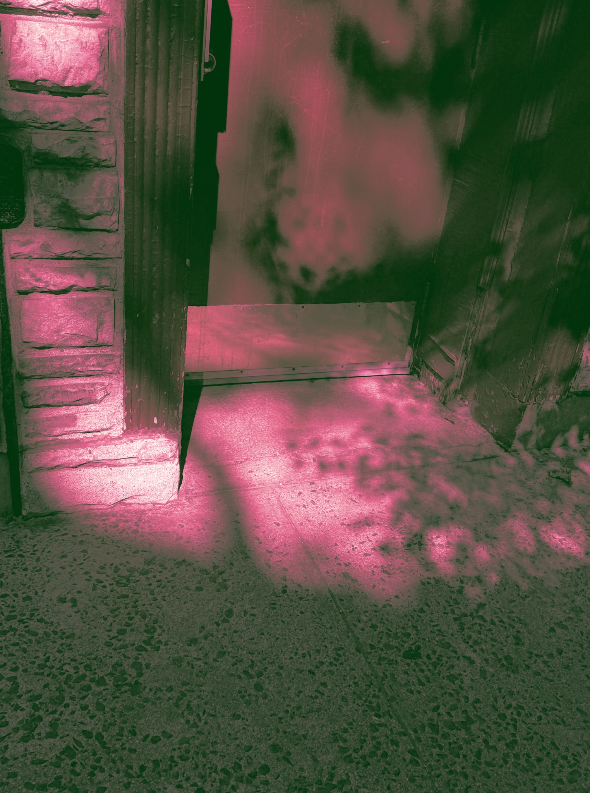

Always with you.
The body / The hidden self
THE SHADOW
THAT CANNOT
BE STEPPED ON
When I was a child, there was a very simple game called stepping on shadows. It did not require any toys, and it had no complicated rules. All it needed was sunlight, an open space, and at least two people. One person ran in front while the other chased behind, and the person chasing tried to step on the shadow cast by the person in front. The real body was not touched at all, but as soon as someone successfully stepped on the shadow, the person being chased would often shout, “You stepped on me.” Children almost never questioned this rule, because within the game, the shadow naturally became part of the body.
What is most interesting about the game of stepping on shadows is that we can never truly catch a shadow. A body can be held, clothes can be grabbed, toys can be taken away, but a shadow has no physical substance. When a foot steps on it, we feel no resistance, and no real mark is left behind. As soon as the person being chased continues running forward, the shadow immediately moves away from under the foot. It looks like something that can be touched because it appears clearly on the ground, but when we truly try to catch it, we discover that it is nothing. This state places the shadow somewhere between “existing” and “not existing.”
Psychological discussions of the “shadow” also often point toward these ignored or repressed parts of the self. However, if we simply understand the shadow as “the evil side,” we make it too simple. The parts of ourselves that we do not show are not necessarily bad.
This is also why childhood memory and shadows have such a fitting relationship. Memory itself is very much like a shadow because it is not everything that truly happened in the past. It is only the outline that remains. We experienced countless afternoons as children, but perhaps we can only remember a few specific moments from them.
Returning once again to the childhood game of stepping on shadows, I no longer see it as something as simple as it first appeared. When we were children, we ran after other people’s shadows and tried to place our foot on that dark outline, as if stepping on it would allow us to temporarily control another person. Yet a shadow can never truly be fixed in place. As soon as the body moves, the shadow escapes again.
It reminds us that the past exists, and it also reminds us that we are not only the side of ourselves that other people can see. When we were children, we tried to step on it. As adults, perhaps what we truly need to do is not to pin the shadow down, but to allow it to keep following us, and from time to time, turn around and look at what shape it has become. Because the parts that are not in the light still belong to a complete person.